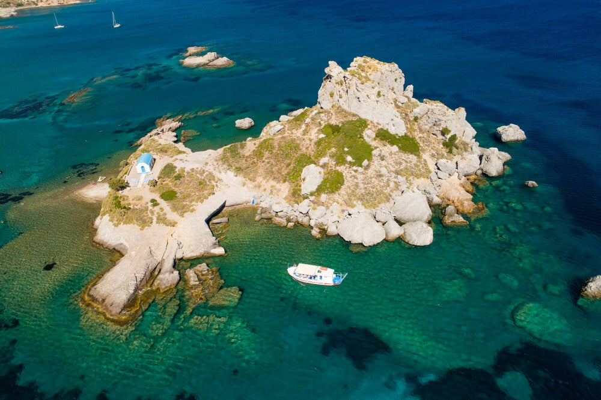

Kapel Agios Nikolaos
Kleine orthodoxe kapel op Kos – rustige plek, typisch voor de eilandkapellen.
Kleine eilandkapel
De kapel van Agios Nikolaos is een van de vele kleine orthodoxe kapellen op Kos – eenvoudig, vaak wit of steen, en belangrijk voor lokale gelovigen.
De kleine kapel van Agios Nikolaos ligt op een piepklein eilandje genaamd Kastri, vlak voor de kust. Dit witte kerkje met blauwe koepel is een van de bekendste en meest gefotografeerde plekjes van het eiland. Het staat helemaal alleen op het rotseilandje.
Er ligt een klein steigertje en dan loop je via stenen traptreden omhoog naar de kapel. In de zomer is de uitdaging vanaf de kant naar de overkant te zwemmen en daar de bel te luiden.
De kapel stamt waarschijnlijk uit de Byzantijnse tijd, uit de jaren 469-554 na Christus, en is gewijd aan Sint-Nicolaas, de beschermheilige van zeelieden.
Op het eilandje zelf zie je nog wat resten van een middeleeuws kasteel liggen, vandaar de bijnaam Paleokastro (oud kasteel).
Bijna iedereen die op Kos komt maakt er wel een foto. Kortom: een romantisch, rustig en fotogeniek plekje.
 Kapel
Kapel

Kapel Kapel
Kapel
Bezoeken
Gratis van buitenaf; bij open deur stil en respectvol.